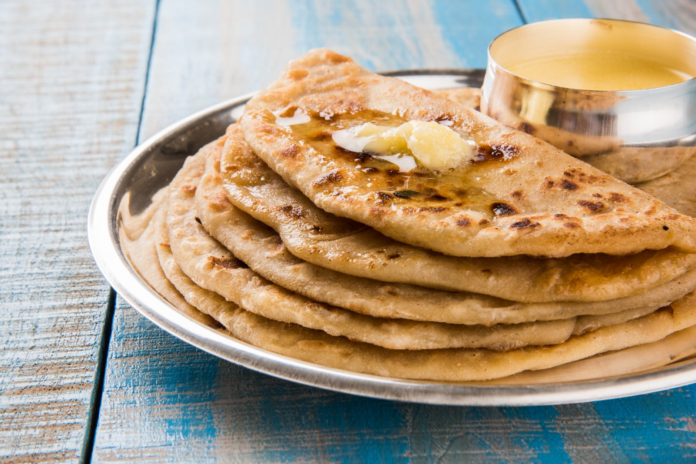
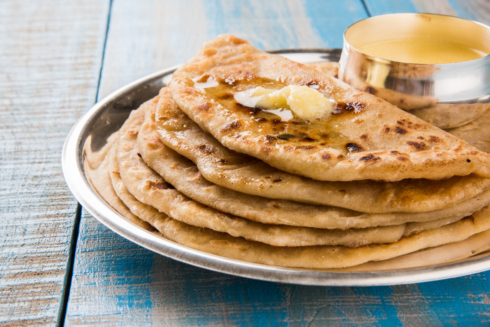

Name: Sakshi Deshmukh
Roll No: 20
üè° Welcome to My Hometown
Discover the charm, culture, and colors of where I belong
üìç About My Hometown
Akola is a major city in the Vidarbha region of the Indian state of Maharashtra. Akola is an important city due to its history, culture, politics, and agriculture.


üèûÔ∏è Top Attractions
Raj Rajeshwar Temple
Salasar Balaji Temple
Sundarabai Khandelwal Tower

üçõ Famous Local Food
Akola is a bustling city situated in the heart of Maharashtra, offering a diverse array of delectable dishes. The city’s specialties range from mouthwatering street foods, including pav bhaji and vada pav to decadent sweet treats like basundi and puran poli.
 

üöâ Transportation
Akola attracts a large number of visitors every year. Akola has a fully functional domestic airport, Shivani Airport. It also enjoys excellent railway connectivity with 68 trains passing through Akola Junction daily. The city also has well-connected bus and auto-rickshaw services.